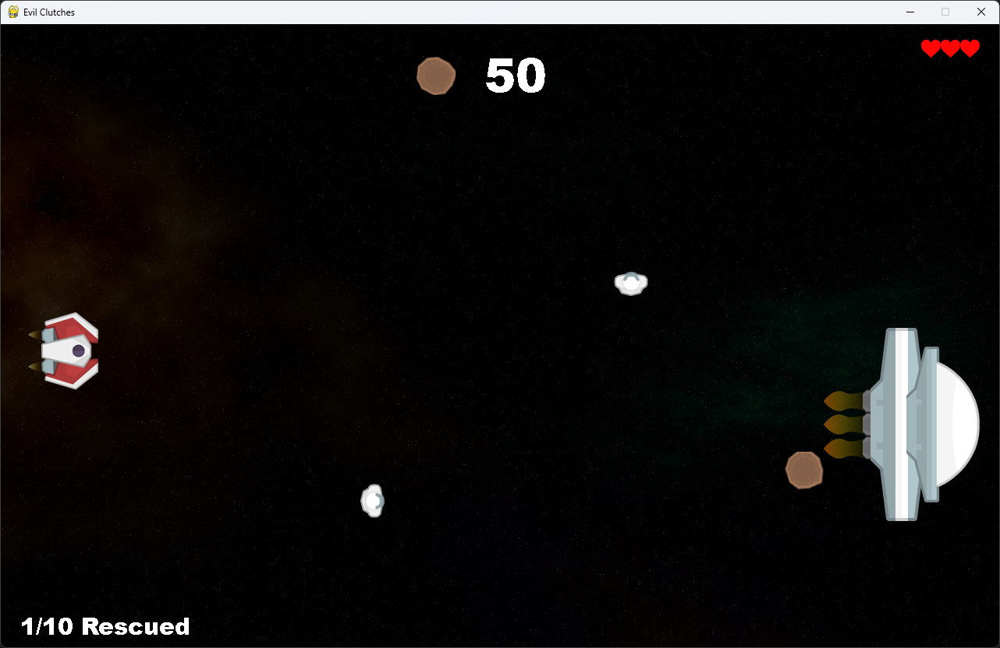
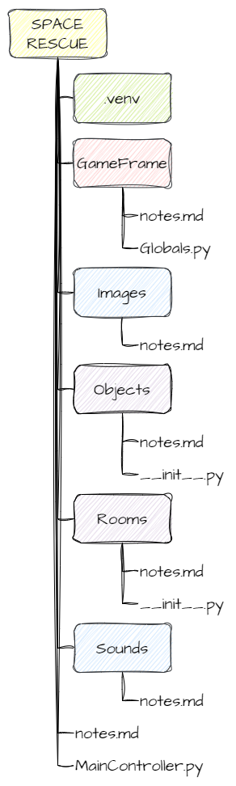

Get to know GameFrame¶
How GameFrame works¶
The GameFrame framework is built around Objects.
You will create objects that contain the logic for how your game works. These objects are then placed inside Rooms, where the game takes place.
Game Logic
Game logic is all the code that makes a game work.
It controls things like:
what happens when a player presses keys
what happens when objects collide
how and when the score changes
The image below shows what the game you will create will look like.

Everything you see on the screen is an Object:
the player’s spaceship on the left
the enemy spaceship (called Zork) on the right
asteroids
astronauts
score
player’s lives
the sub-goal counter
All of these are inside a Room called GamePlay.
Looking closer¶
The player’s ship object, called Ship, includes:
its sprite (image)
code that responds to key presses
code that stops it moving outside the top and bottom of the room
code that shoots lasers
Other objects have their own game logic. For example:
the Zork object controls when asteroids and astronauts appear
the Asteroid object reduces the player’s health when it hits the ship
the Astronaut object increases the score when collected
the Laser object destroys asteroids and astronauts on contact
When creating a game in GameFrame, you need to think about:
which objects are in your game
how they interact with each other
how they interact with the player
Documentation¶
This tutorial will cover many of the features of GameFrame.
If you want to explore further or use GameFrame for your own projects, you can find the full details on the GameFrame API page.
File Structure¶
Another important part of GameFrame is understanding its file structure and the key files it uses.
The image below shows how the files are organised.

The yellow SPACE RESCUE folder is the root folder. It contains everything for the project.
The green .venv folder stores your virtual environment files. This was created by Visual Studio Code when you set up the environment.
All the remaining folders and files belong to the GameFrame framework. Each GameFrame folder (root, GameFrame, Images, Objects, Rooms, and Sounds) includes a notes.md file. These files contain documentation for that specific folder. The full documentation is available on the GameFrame API page.
The red GameFrame folder is the engine of the framework. It contains most of the core code. The main file you need to know is Globals.py, which stores variables used across the entire program.
The blue Images and Sounds folders store all the assets used in the game. They already include the files needed for Space Rescue. If you want to add your own images or sounds, place them in these folders.
The purple Objects and Rooms folders are where you will write most of your code. This is where you create your own classes. For example, you will create a file called Ship.py that contains the Ship class inside the Objects folder.
Both of these folders also contain a __init__.py file. This file is important because it connects all parts of the program together. When you create a new file and class, you must add it to the __init__.py file so GameFrame can find and use it.
from Objects.Ship import Ship
The final important file is MainController.py in the root folder.
This is the file you run to start the game.